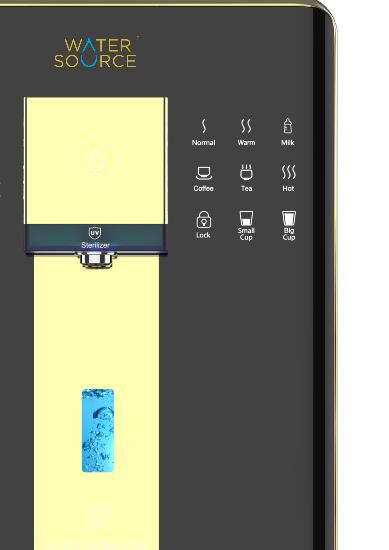

Hydrogen-rich water on tap
Dispense hydrogen-rich water at home instead of buying it bottled.
Independent electrolysis module + SuperMix
WaterSource H001 · Alkaline Hydrogen-Rich Water Purifier
The H001 combines three-stage reverse osmosis purification, SuperMix hydrogen-rich water generation and 3-second instant heating in a single countertop appliance.
S$2,888 promotion price · usual S$3,388 · 1-year on-site warranty

3 seconds
Instant heating, on demand
200G RO
Reverse osmosis purification
SuperMix
Hydrogen-rich water
UVC LED
In-tank sterilization
The WaterSource H001 is an alkaline hydrogen-rich water purifier for the home. It purifies tap water through three filter stages — a PAC composite filter, a 200G reverse osmosis membrane and a natural trace mineralized carbon rod filter — then either enriches that purified water with hydrogen or heats it on demand.
Hydrogen is produced on board by an independent electrolysis module and dissolved into the water by the SuperMix gas-liquid mixing system. Heating is handled by third-generation rare-earth thick-film heating, which reaches temperature in three seconds across six stages: Normal, Warm, Milk, Coffee, Tea and Boiling. A built-in UVC LED sterilizes inside the removable 2-litre tank.
The H001 fuses the filtration of a water purifier, the heating of a water dispenser and the hydrogen generation of a hydrogen-rich water machine. Water is purified first, then enriched or heated on demand — so every glass is drawn from freshly filtered water rather than a repeatedly reheated tank.

01
A PAC composite filter removes sediment, rust and residual chlorine. A 200G high-flux RO membrane follows. A natural trace mineralized carbon rod then returns minerals such as strontium, potassium, calcium and magnesium.
Three filter stages, four layers
02
An independent electrolysis module generates hydrogen from that purified water. SuperMix gas-liquid mixing shears it into micro- and sub-micron bubbles and dissolves it into the water under pressure.
Electrolysis module + SuperMix
03
Third-generation rare-earth thick-film heating brings water to temperature on demand, across six stages: Normal, Warm, Milk, Coffee, Tea and Boiling.
3-second heating, six stages
Why H001
Each capability, the difference it makes at home, and the technology it comes from.

01
Dispense hydrogen-rich water at home instead of buying it bottled.
Independent electrolysis module + SuperMix
02
No kettle, and no tank of water reheated over and over through the day.
Third-generation rare-earth thick-film heating
03
Reverse osmosis removes what you don't want; the third stage puts trace minerals back, so the water tastes clean rather than flat.
200G RO membrane + mineralized carbon rod
04
Milk, coffee, tea and boiling water from the same panel, in measured amounts.
6-stage temperature control · 150 / 300 / 500 ml
05
The 2-litre built-in tank is removable and its cover opens, and UVC runs inside it.
Built-in UVC LED with visual indication
06
The panel tells you when a filter is near the end of its life, and filters are quick-connect.
Filter-life indicator · self-installable filters
Advanced hydrogen technology
Hydrogen-rich water is drinking water with hydrogen gas dissolved into it. In the H001 the water is purified first, an independent electrolysis module splits some of that purified water to produce hydrogen, and the SuperMix system dissolves the hydrogen back into the drinking water before it reaches your glass.
01
Mains water enters the integrated waterway plate.
02
PAC, 200G RO and mineralized carbon stages produce purified water.
03
An independent module electrolyses purified water into hydrogen and oxygen.
04
Hydrogen is sheared into fine bubbles and mixed into the drinking water under pressure.
05
Dispensed at the nozzle, with the process visible through the front window.
In short: the H001 produces hydrogen-rich water by electrolysing water it has already purified, then dissolving that hydrogen back into the drinking water with the SuperMix gas-liquid mixing system.
Hydrogen escapes water easily, so how it is mixed in matters as much as how it is made. SuperMix forces water through a confined channel at high speed, and the shearing force between water molecules cuts free hydrogen into large numbers of micro- and sub-micron bubbles. Smaller bubbles mean far more contact area between gas and liquid, so the hydrogen dissolves in a very short time.
A patented shut-off channel then brings the pressure back to normal while injecting compressible hydrogen at high frequency. This limits the water's velocity gradient and reduces collisions between dissolved hydrogen molecules, which extends how long the hydrogen stays in the water on its way to your glass.
Developed together with specialists in nano-bubble technology.
01
Free hydrogen gas enters the water flow.
02
High-speed flow in a narrow space builds shearing force between water molecules.
03
Hydrogen is cut into micro- and sub-micron bubbles, greatly increasing gas-to-liquid contact area.
04
Pressure returns to normal while hydrogen is injected at high frequency, so more of it stays dissolved.

Water purification system
Tap water passes through the stages in order. Each one has a job: remove the large particles, remove what is dissolved, then restore taste. Filters are quick-connect and can be installed yourself.
Tap water → PAC composite → 200G RO membrane → Mineralized carbon → Drinking water

Stage 1
Folded polypropylene fibre intercepts sediment, rust and suspended solids, while the activated carbon rod adsorbs residual chlorine, odour and discolouration. Two filter materials in one cartridge.
Service life 6–12 months

Stage 2
Reverse osmosis at a theoretical purification precision of 0.0001 micron, filtering bacteria, chemical pesticide residues, radioactive particles, residual chlorine, micro-organisms and organic substances. The high-flux membrane refills the tank quickly for continuous use.
Service life 12–24 months

Stage 3
Made from 18 natural mineralized materials. It further adsorbs odour and discolouration and adds trace minerals such as strontium, potassium, calcium and magnesium back into the water, for a rounder taste.
Service life 6–12 months
In short: the H001 filters tap water in three stages — PAC composite, 200G reverse osmosis membrane, and natural trace mineralized carbon rod — removing contaminants and then returning trace minerals for taste.
Inlet water temperature should not exceed 65 °C. Applicable water source: tap water.
3
3-second instant heating
Third-generation rare-earth thick-film heating warms water as it passes through an explosion-proof refined steel core, so heat reaches the water directly instead of slowly warming a stored tank.
Because water is filtered first and heated only when you ask for it, you avoid water that has been boiled and reboiled through the day. Thick-film heating also improves on the stability of older quartz-tube designs.

In short: the H001 heats water in three seconds using third-generation rare-earth thick-film heating, warming water as it flows rather than storing it hot.
Rather than one hot setting for everything, the panel offers six temperature stages — one press each, all dispensed from freshly filtered water.
01
Room-temperature drinking water through the day, straight from the filtered supply.
Panel key: Normal
02
Warm water, including honey water.
Panel key: Warm
03
Milk preparation at a settled temperature, without mixing kettle and tap water.
Panel key: Milk
04
Brewing coffee without boiling it.
Panel key: Coffee
05
Green tea and other leaf teas.
Panel key: Tea
06
Boiling water on demand, in three seconds.
Panel key: Hot
A child lock on the panel prevents accidental hot-water dispensing.
Quantitative dispensing stops at the amount you select with the Small Cup and Big Cup keys, so the water stops on its own.
150 ml
A small glass
300 ml
A large glass
500 ml
A bottle or jug, without leaving the tap running
Volumes shown to scale.
Clean water, clean system
Purifying water is only half the job. The H001 also looks after the water it is holding and the path that water travels through — and it shows you on the panel when it is doing so.

A UVC lamp inside the tank has bactericidal and bacteriostatic action, with a visual indication on the panel so you can see when it is running.
Over long use a small amount of sediment can settle inside any tank. The H001's tank is removable and its cover lifts off, so the inside can be cleaned properly.
Antibacterial material is used in the watercourse, and an Intelligent Washing key on the panel rinses the system.
A high-definition display and a flat touch panel. Everything the machine is doing is stated on the panel, and every function is one press away.

Indicators for water production, fresh water, no water and error, with the filter-span and readout area beside them.
Rinse the system, and reset the filter-life counter after a replacement.
Normal, Warm, Milk, Coffee, Tea and Hot, each selected directly rather than through a menu.
Lock the panel against accidental use, and dispense the 150 ml, 300 ml and 500 ml presets.
Shows when the UVC lamp is sterilizing inside the tank.
The window on the front of the machine, where hydrogen-rich water generation is visible.
You don't need to keep a calendar. The filter-life indicator stays dark in normal use, flashes orange when a filter reaches 80% of its service life, and stays lit once it is due. Filters are quick-connect, so replacement is a task you can do yourself.
No.1
No.2
No.3
Product details
{{ viewCaption }}


Technical specifications
| Product name | Alkaline Hydrogen-Rich Water Purifier |
|---|---|
| Product model | H001 |
| Rated water yield | 2000 L |
| Water discharge | 30 L/h |
| Rated voltage / frequency | 220V~ / 50Hz |
| Rated power | 2200 W |
| Power consumption | 0.1 kW·h / 24h |
| Applicable water source | Tap water |
| Applicable water temperature | 4–38 °C |
| Stage 1 filter | PAC composite filter |
| Stage 2 filter | 200G reverse osmosis membrane |
| Stage 3 filter | Natural trace mineralized carbon rod filter |
| Built-in water tank | 2 L, removable |
| Shell material | ABS |
Offer
S$2,888
Usual price S$3,388
1-year on-site warranty
Delivery, installation and payment options are confirmed by WaterSource when you enquire.
Answers drawn from the H001 product documentation.
{{ f.a }}
Purification, hydrogen-rich water and instant heating in one intelligent system.

S$2,888
Promotion price